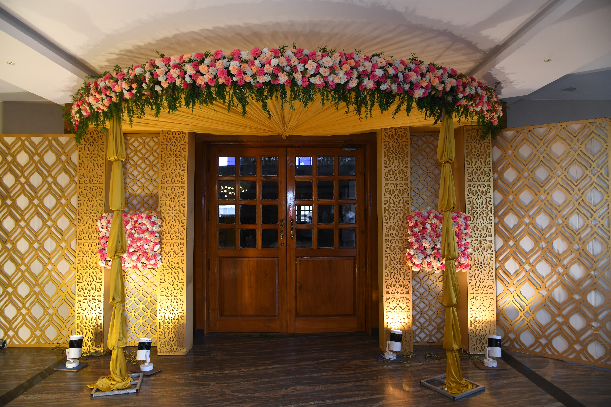

At VKS Garland and Decorations, we believe the entrance is a declaration. Before your guests see the stage, before they taste the food — they see the entrance. We design towering floral arches, immersive tunnels, and illuminated corridors that stop people in their tracks and set the tone for your entire event.

Real entrance designs by VKS Garland and Decorations. Tap any image to view full size.




The entrance to your event tells your guests everything. In one glance, they understand the scale, the elegance, and the love that has gone into every detail. At VKS Garland and Decorations, we take entrance design seriously — because we know that first impressions are the ones that last.
Our entrance designes range from classic floral structures cascading with roses and orchids, to dramatic floral tunnels that immerse your guests in a corridor of blooms, to modern LED-lit corridors that glow beautifully in evening light. Every design by VKS Garland and Decorations is built fresh — flower by flower, petal by petal, on the day of your event.
We work closely with each client to understand their venue, their theme, and the statement they want to make. VKS Garland and Decorations has created grand entrance installations for weddings, corporate inaugurations, political events, temple festivals, and celebrity celebrations across Tiruchirappalli and Tamil Nadu.
When you choose VKS Garland and Decorations for your entrance decoration, you are choosing craftsmanship, creativity, and a team that never compromises on quality. Your entrance should be magnificent — and with VKS, it always is.
At VKS Garland and Decorations, entrance designes are not an afterthought — they are the opening statement of your entire event. We design and build arches that stop guests in their tracks and set the perfect mood before they even step inside.
Tell us about your venue and VKS Garland and Decorations will design an entrance that sets the tone for your entire event.